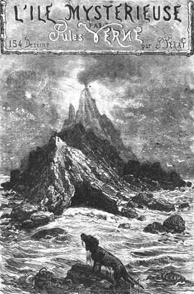

THE MYSTERIOUS ISLAND
by
JULES VERNE
Original illustrations by
Jules-Descartes Férat

The Castaways from the Sky
The Abandoned
The Secret of the Island
Translation copyright © 1992 by Sidney Kravitz, 592 Herrick Drive, Dover, New Jersey 07801-2013
Edited to HTML by Rakibul Hafiz